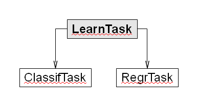

Learning tasks are the basic element of the package to encapsulate the data set and all relevant information regarding the purpose of the task. This will be at least the target variable, but might also be information about excluded (ID) variables, misclassification costs or case weights.
Currently two subclasses of a learn.task exist, classif.task for classification problems and regr.task for regression. Both are created by using the make.task factory method, and the type of the task is decided automatically by looking at the target variable. If this is encoded as an integer, you have to change it either to a factor/character for classification or a numerical for regression.

In the following example we define a classification task for the data set BreastCancer (from the package mlbench) and exclude the ID variable from all further model fitting and evaluation.
library(mlbench); data(BreastCancer) ct <- make.task(data = BreastCancer, target = "Class", excluded = "Id")
The now defined task also gives you some convenience methods to access properties of the data set:
# before we start, let's examine ct # print useful info about the data set ctClassification problem BreastCancer Features Nums:0 Ints:0 Factors:9 Chars:0 Observations: 699 Missings: TRUE in 16 observations and 1 features Classes:2 benign malignant 458 241 Positive class: benign # as this is a binary problem, we see that a positive class is selected by default # this will generally be the first class in the factor levels of the target # you probably want to select this manually for your applications ct <- make.task(data = BreastCancer, target = "Class", excluded = "Id", positive="benign")# access more information # get target name and the names of the input variables - same for regression ct["target.name"] ct["input.names"]# get target values for all / some observations - same for regression ct["targets"] ct["targets", row=1:5]# get all possible classes ct["class.levels"]
Look at the documentation of the relevant class, if you are interested in what kind of "getter"-functions are available, e.g. for the task.
We can include further information like costs or weights optionally:
# non-default costs for wrong predictions: costs <- matrix (c(0, 1, 2, 0), 2, 2) colnames(costs) <- rownames(costs) <- ct["class.levels"] costsbenign malignant benign 0 2 malignant 1 0 ct <- make.task(data = BreastCancer , target = "Class", excluded="Id", costs = costs)# (nonsensical) weights for the observations ct <- make.task(data = BreastCancer, target = "Class", excluded="Id", weights = 1:699)
From this classification task we can now train various models, which will be covered in the section Training . Before that, let's look at a regression experiment:
# We will generally take the BostonHousing data set as regression example library(mlbench); data(BostonHousing) rt <- make.task(data = BostonHousing, target = "medv")Regression problem BostonHousing Features Nums:12 Ints:0 Factors:1 Chars:0 Observations: 506 Missings: FALSE # rest works analogous to classification task